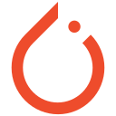

I'm an M.Sc. student at Sharif University of Technology, working on blind speech separation with Dr. Massoud Babaie-Zadeh.
I study how to recover individual voices when several people speak at once. More broadly, I'm interested in statistical signal processing and in what learning methods can tell us about a signal.
Before Sharif, I studied electrical engineering at the University of Tehran. My undergraduate thesis used accelerometer data and a CNN to recognize body postures, under the supervision of Dr. Saeed Akhavan.
Applying for PhD positions in speech, audio and statistical signal processing.
M.Sc. thesis · In progressSharif University of Technology
Blind speech separation
A microphone records everything at once. My research asks how we can recover the individual speakers from those overlapping recordings, without knowing the mixing process in advance.
Supervised by Dr. Massoud Babaie-Zadeh
Fig. 01 · Interactive audio & geometry lab
Two voices, two microphones
Adjust crosstalk, drag the basis vectors, or click play to hear separation live.
Mixed (x₁, x₂)
Drag vector tips
Column a₁Column a₂
Scenarios
x1x2=10.600.451s1s2
det(A)0.73
κ(A)3.2
Recovery r
0.99
The challenge: a blind separation algorithm receives only the two mixed microphone signals. Press play to hear a male and female speaker counting “one, two, three” overlap in the microphones and separate cleanly in the outputs, or switch to STFT spectrograms. This uses instantaneous mixing as an interactive illustration, not my thesis results.About this interactive model
The two source tracks are 16 kHz spoken clips (a male and a female voice each counting “one, two, three” with staggered timing), mixed instantaneously in the browser with a small amount of additive Gaussian sensor noise so ill-conditioned mixtures (large κ(A)) visibly and audibly amplify noise.
Recovery runs a classical two-step ICA pipeline live on the waveform samples: PCA whitening spheres the sheared distribution into uncorrelated coordinates (still rotated by an unknown orthogonal angle), and a 4th-order moment sweep finds the rigid rotation maximizing excess kurtosis. Clicking Unmix animates this exact geometric trajectory. Outputs are aligned to the speakers for display; this is a pedagogical sketch, not the method from my thesis.
B.Sc. thesis · 2025University of Tehran
Recognizing body posture from sensor data
For my undergraduate thesis, I built a CNN pipeline to classify body postures from accelerometer recordings. The starting point is a small sensor producing three time series.
Supervised by Dr. Saeed Akhavan
Fig. 02 · Interactive 3D accelerometer & CNN pipeline
One sensor, three axes
Grab & tilt or shake the 3D sensor to drive the graphs live, or pick a posture.
Drag & shake me
x +0.00gy +0.00gz +1.00g
01Record 3-axis sensor
02Window Sliding frame
03Extract 1D-CNN
04Classify Walking
Window cues
Gravity tilt
Dynamic energy
Illustrative class scores
Walking
Sitting
Standing
Lying
Showing illustrative walking acceleration and gravity tilt. Drag the 3D sensor to orbit or slide the analysis window. This sketch explains the pipeline; it does not show experimental thesis recordings.Full thesis title
Body Posture Recognition Using an Accelerometer Sensor with a CNN Architecture
Education
Tehran → Sharif
Sharif University of Technology
2025 – Present · Tehran, Iran
M.Sc. in Electrical Engineering – Telecommunications (Systems)
GPA (to date):18.11 / 20
Thesis (in progress): Blind Speech Separation (Supervisor: Dr. Massoud Babaie-Zadeh)
University of Tehran
2021 – 2025 · Tehran, Iran
B.Sc. in Electrical Engineering (Telecommunications)
GPA:18.38 / 20
Thesis: Body Posture Recognition Using an Accelerometer Sensor with a CNN Architecture (Supervisor: Dr. Saeed Akhavan)
Selected coursework7 courses · Grades out of 20
Foundations of Computer Vision20 / 20
Adaptive Filters19.7 / 20
Blind Source Separation19.25 / 20
Estimation Theory18.7 / 20
Neural Networks & Deep Learning18.55 / 20
Graph Signal Processing17.2 / 20
Information Theory & Learning16 / 20
Experience
Engineering & teaching
Signal Processing Engineer
Sep. 2024 – Jun. 2025
Hekimed · Part-time, Hybrid (Tehran, Iran)
Worked part-time on signal processing and sensor data analysis alongside my studies.
Teaching Assistant
Sep. 2023 – Present
Sharif University of Technology & University of Tehran
Courses I have assisted (5)
Adaptive Filters SharifSharif University of Technology · Under Dr. Massoud Babaie-Zadeh (Fall 2026)
Communication Systems Introduction UTUniversity of Tehran · Under Dr. Maryam Sabbaghian (Fall 2024) and Dr. Ali Olfat (Fall 2024)
Signals and Systems UTUniversity of Tehran · Under Dr. Saeed Akhavan (2023–2024) and Dr. Mohammad Ali Akhaee (Fall 2024)
Engineering Mathematics UTUniversity of Tehran · Under Dr. Ali Haghi (Fall 2023) and Dr. Mehdi Tale Masouleh (2024–2025)
Engineering Probability and Statistics UTUniversity of Tehran · Under Dr. Ali Haghi (Fall 2023) and Dr. Amir Masoud Rabiei (Fall 2024)
Tools & learning
What I work with
Programming & Typesetting
PythonMATLABLaTeX
Deep Learning & Signal Libraries

PyTorchTensorFlowKerasLibrosaGSPBox
Courses & Certifications
PyTorch for Deep Learning Professional CertificateDeepLearning.AI